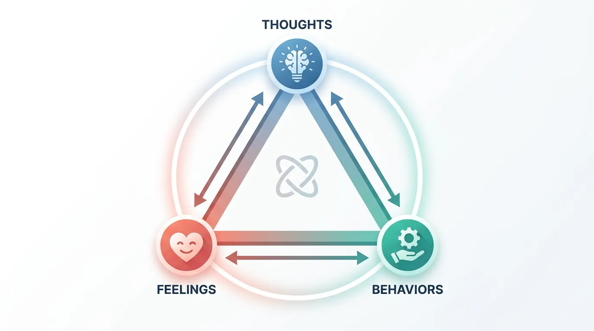
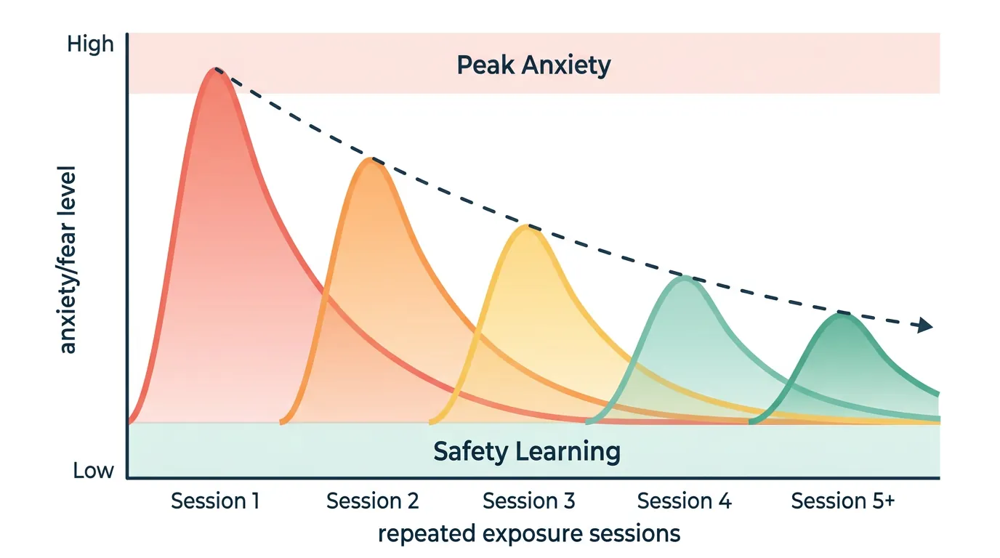
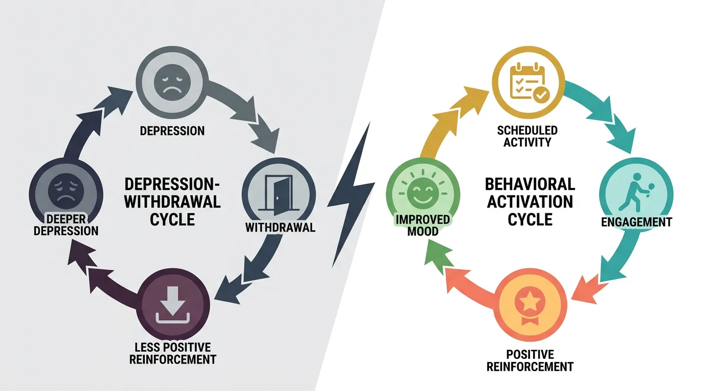
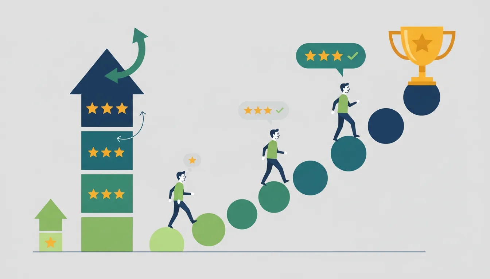
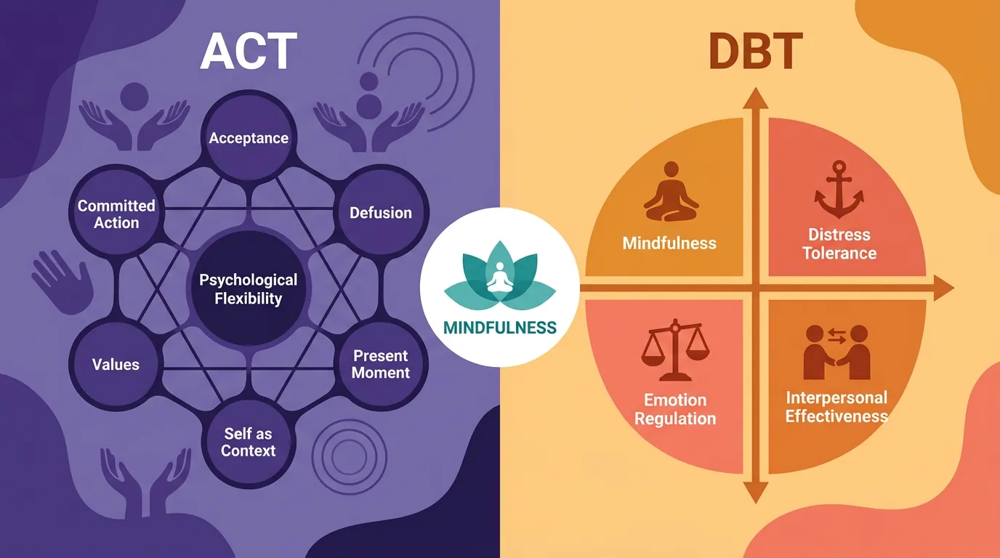

What Is Behavioral Therapy?
Behavioral therapy applies the principles we've learned throughout this series to clinical treatment. In this final part of our series, we explore evidence-based therapeutic approaches rooted in behavioral psychology.
Key Insight
Behavioral therapies focus on changing what people do (behaviors) rather than just what they think or feel—because actions shape thoughts and emotions.
Behavioral Psychology Mastery
Foundations of Behavior
Core principles, conditioning, behavioral loopHabit Formation & Breaking
Habit loops, building & breaking habitsDecision-Making Psychology
Biases, dual-system thinking, behavioral economicsMotivation & Drive
Intrinsic vs extrinsic, theories, goal psychologyNudge Theory & Choice Architecture
Defaults, framing, behavioral designBehavior Change Models
COM-B, Fogg, transtheoretical modelSocial Influence & Persuasion
Conformity, authority, Cialdini's principlesPractical Applications
Personal, workplace, business, healthBehavioral Neuroscience Basics
Dopamine, stress, habit circuitryBehavioral Research Methods
Experiments, RCTs, field studiesApplied Behavioral Therapy
CBT, exposure therapy, reinforcementCognitive Behavioral Therapy (CBT) Foundations
CBT is the most researched and widely used evidence-based therapy. It treats problems by changing the relationship between thoughts, feelings, and behaviors.

The CBT Triangle
| Component | Description | Intervention Target |
|---|---|---|
| Thoughts | Automatic interpretations of events | Cognitive restructuring |
| Feelings | Emotional responses | Emotion regulation skills |
| Behaviors | Actions and responses | Behavioral experiments |
Key insight: You can enter the cycle at any point. Changing behavior changes thoughts and feelings; changing thoughts changes feelings and behavior.
Common Cognitive Distortions
Thinking Errors to Watch For
| Distortion | Description | Example |
|---|---|---|
| All-or-nothing | Black-and-white thinking | "If I'm not perfect, I'm a failure" |
| Catastrophizing | Assuming worst outcome | "This mistake will ruin my career" |
| Mind reading | Assuming others' thoughts | "They think I'm stupid" |
| Overgeneralization | One event = universal pattern | "I always mess up" |
| Emotional reasoning | Feelings as evidence | "I feel anxious, so it must be dangerous" |
| Should statements | Rigid rules | "I should never make mistakes" |
Cognitive Restructuring Process
The ABCDE Method
- A - Activating event (what happened)
- B - Belief (automatic thought)
- C - Consequence (feeling/behavior)
- D - Dispute (challenge the belief—what's the evidence?)
- E - Effect (new, more balanced thought and feeling)
Exposure Therapy
Exposure therapy treats anxiety disorders by systematically confronting feared situations—allowing the fear response to naturally diminish (habituation).

Types of Exposure
| Type | Description | Used For |
|---|---|---|
| In vivo | Real-life exposure to feared situations | Phobias, social anxiety |
| Imaginal | Vividly imagining feared scenarios | PTSD, obsessions |
| Interoceptive | Exposure to feared body sensations | Panic disorder |
| Virtual reality | Computer-simulated exposure | Flying phobia, height phobia |
How Exposure Works
Inhibitory Learning
Modern understanding: Exposure doesn't erase fear memories—it creates new, competing "safety" memories. The key is learning that feared consequences don't occur (or are manageable). This is why avoidance maintains anxiety—it prevents new learning.
Behavioral Activation
Behavioral activation treats depression by increasing engagement in rewarding activities—breaking the cycle of withdrawal and low mood.

The Depression Cycle
Depression → Withdrawal → Less positive reinforcement → More depression
Behavioral activation breaks the cycle: Even without motivation, doing rewarding activities increases positive experiences, which improves mood, which increases motivation.
Behavioral Activation Process
BA Steps
| Step | Activity |
|---|---|
| 1 | Track current activities and mood |
| 2 | Identify activities linked to better mood |
| 3 | Schedule rewarding activities (don't wait for motivation) |
| 4 | Start small and build gradually |
| 5 | Problem-solve barriers to engagement |
Reinforcement-Based Treatments
Some treatments apply operant conditioning principles directly to problem behaviors.

Contingency Management
Used for: Substance use disorders, medication adherence
| Component | Application |
|---|---|
| Target behavior | Negative drug test, attending sessions |
| Reinforcer | Vouchers, prizes, cash incentives |
| Schedule | Immediate, escalating with consecutive successes |
| Evidence | Strong support, especially for stimulant use |
ACT & DBT Overview
Third-wave behavioral therapies incorporate mindfulness and acceptance alongside behavior change.

ACT vs DBT
| Aspect | ACT | DBT |
|---|---|---|
| Full name | Acceptance and Commitment Therapy | Dialectical Behavior Therapy |
| Core focus | Psychological flexibility | Emotion regulation |
| Key processes | Accept feelings, commit to values-based action | Balance acceptance and change |
| Developed for | General anxiety, depression, chronic pain | Borderline personality disorder |
| Mindfulness role | Defusion from thoughts | Distress tolerance skill |
The Evidence Base
Behavioral therapies are among the most researched treatments in psychology.
Evidence for Behavioral Therapies
| Therapy | Condition | Evidence Level |
|---|---|---|
| CBT | Depression, anxiety | Strong (hundreds of RCTs) |
| Exposure | Phobias, OCD, PTSD | Strong (gold standard) |
| Behavioral Activation | Depression | Strong (comparable to full CBT) |
| DBT | Borderline PD | Strong (replicated RCTs) |
| ACT | Anxiety, chronic pain | Growing (many RCTs) |
| Contingency Management | Substance use | Strong (especially stimulants) |
Series Conclusion: Your Behavioral Psychology Journey
Congratulations!
You've completed the Complete Behavioral Psychology Series! You now have a comprehensive understanding of how behavior works and how to change it—in yourself and others.
What You've Learned
- Part 1 - Foundations: Behavior is observable, learned, and shaped by consequences
- Part 2 - Habits: The habit loop (cue-routine-reward) and how to build/break habits
- Part 3 - Decision-Making: System 1 vs System 2, cognitive biases, and behavioral economics
- Part 4 - Motivation: Intrinsic vs extrinsic, Self-Determination Theory, goal psychology
- Part 5 - Nudge Theory: Choice architecture, defaults, framing, and ethical design
- Part 6 - Change Models: COM-B, Fogg, Transtheoretical Model, EAST framework
- Part 7 - Social Influence: Conformity, authority, Cialdini's six principles
- Part 8 - Applications: Productivity, workplace, health, marketing, education
- Part 9 - Neuroscience: Dopamine, basal ganglia, PFC, stress, neuroplasticity
- Part 10 - Research Methods: RCTs, A/B testing, field studies, statistical analysis
- Part 11 - Therapy: CBT, exposure, behavioral activation, ACT, DBT
Your Next Steps
- Apply: Pick one behavior to change using what you've learned
- Experiment: Test different strategies and track what works
- Share: Teach these concepts to solidify your understanding
- Explore: Continue to related series on psychology, neuroscience, or personal development
Remember: Understanding behavior is one thing. Changing it takes practice. The science says change is possible—now it's time to put it into action.